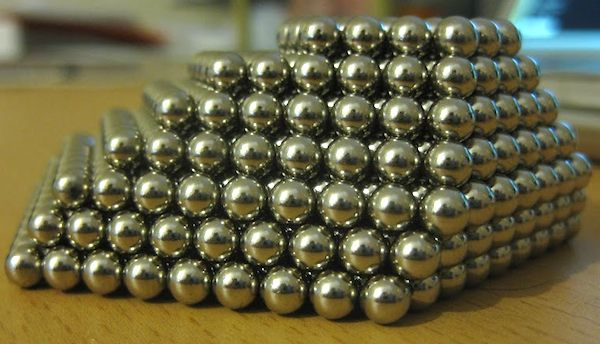

Raytracing is a computer graphics rendering technique that is useful when there are lots of reflective or refractive surfaces in a scene. The idea is to model the rays of light that are bouncing around the scene.

However, we don’t need to model every ray of light. To make a rendering from a single viewpoint, we only care about the rays of light that eventually hit our eye.
So, we end up modeling the rays backwards in time. For every pixel in our output image, we imagine that some ray of light hit our eye at a certain angle. We trace back that ray of light—bouncing off of any reflective surfaces—until we hit a source of light in our scene.
Raytracing is usually used in a 3D context, but we can simplify things a little and use raytracing to make a generalized 2D kaleidoscope effect, with arbitrarily placed mirrors.
We model the scene with our eye in the center. For each pixel, we characterize the ray as the 2D line from the center to that pixel. Our source of light is just the source image for the effect.
Here are a few examples. When you move your mouse over the image, the red line shows the ray that we want to compute for the pixel you’re on. The green line shows how that ray bounces off the mirrors until it lands on our source image, giving the resulting color. Notice how the end points of each line correspond.